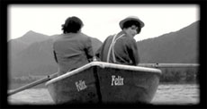

|
DIE VERFILMUNG MEINES LEBENS (The Filming of My Life)
Felix Burger | D 2009 | 23 min.
Material: DV
Format: DVD
Original language: German
Camera: Isabelle Pyttel, Sandra Hauser
Editing: Felix Burger
Sounddesign: Benedikt David
Text: Isabelle Pyttel
With Ingrid Capelle, Wenzel Bruecher, Isabell Gross
Production: Felix Burger
Print/Sales: Felix Burger
Felix Burger's Website
The screen adaptation of my life story leads to a collaboration with Alfred Hitchcock who without prior consultation introduces Kim Novak into the script. A looming intimacy is rejected, I break with him in conflict. The meeting with Buster Keaton also does not proceed as desired. At first Keaton throws my script into the Schliersee, then he destroys my film set. A journey to Franz Liszt in Paris eventually brings about a twist...
Felix Burger, born in 1982 in München. Art studies at the Academy of Fine Arts in Munich and Vienna, film studies at the KHM Cologne.
Films (selection): 2010 Die Verfilmung meines Lebens, Luna Park | 2009 Missionary and Tramp | 2008 Ewig waren wir, ewig sind wir (meine Begegnung mit Richard Wagner), The Mill on Black Water (UNDERDOX 05) | 2007 Willkommen daheim, Kochen daheim
back
|